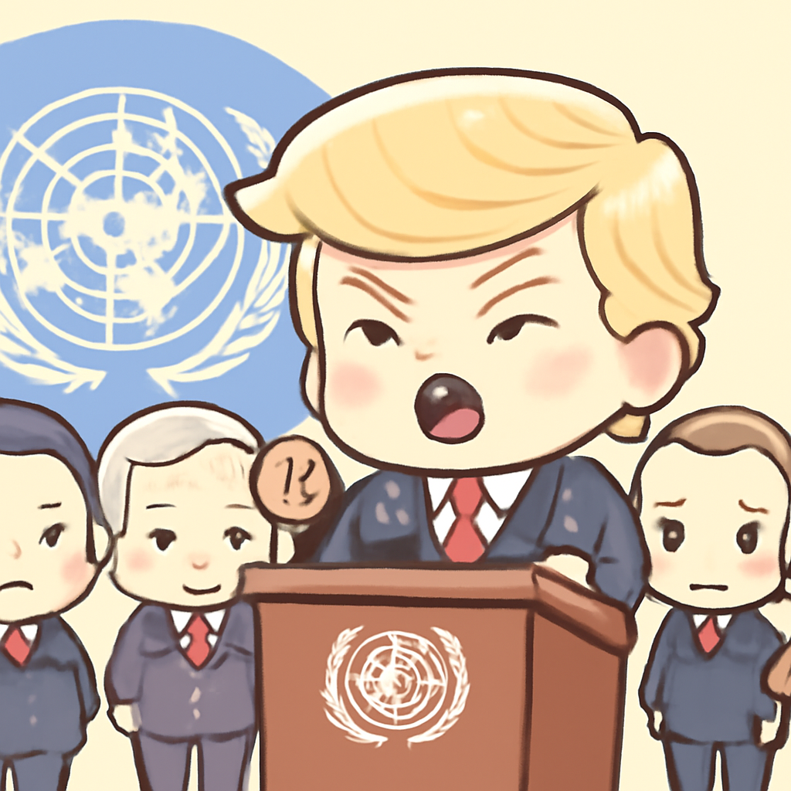

其一 · 美國紐約 · 特朗普在聯合國威脅伊朗
特朗普在聯合國強調對伊朗的強硬立場。

在美國紐約的聯合國大會上，特朗普威脅如果無法達成和平協議，將考慮對伊朗採取極端行動。這一言論不僅引發國際關注，也讓各國領導人感受到緊張的局勢，畢竟，這種語氣可不是隨便用來聊家常的。
🔗 原始新聞 ↗
2026-09-23 · 以古觀今，以笑抗愁
特朗普在聯合國強調對伊朗的強硬立場。

在美國紐約的聯合國大會上，特朗普威脅如果無法達成和平協議，將考慮對伊朗採取極端行動。這一言論不僅引發國際關注，也讓各國領導人感受到緊張的局勢，畢竟，這種語氣可不是隨便用來聊家常的。
🔗 原始新聞 ↗
美國與丹麥簽署協議，計劃在格林蘭建兩座軍事基地。
在最新的防務協議中，美國與丹麥達成共識，將在格林蘭建立兩座軍事基地，這一行動重申了丹麥對其半自治北極領土的主權。這不僅是軍事部署，也可能影響到北極地區的地緣政治平衡，讓人不禁想知道，格林蘭的北極熊們會不會感到不安？
🔗 原始新聞 ↗
15名男子因2019年復活節恐怖攻擊被判有罪。
斯里蘭卡法院最近判定15名男子因2019年在三座教堂和三家豪華酒店發動的自殺式炸彈攻擊而有罪，造成270人死亡。這起事件的裁決不僅是對受害者的某種公正，也讓社會對恐怖主義的警惕再度升高，大家都希望不再重蹈覆轍。
🔗 原始新聞 ↗
烏克蘭對歐盟解除對俄寡頭的制裁表示強烈不滿。
最近，歐盟決定解除對俄羅斯寡頭的制裁，引發烏克蘭的強烈反彈，認為這樣的行動向莫斯科傳遞了錯誤的信號。此舉不僅可能影響歐盟與烏克蘭的關係，也讓人擔心國際社會對俄羅斯的態度會不會逐漸軟化。
🔗 原始新聞 ↗
多個埃及叛軍組成聯盟，對政府發出挑戰。
在埃及，數個叛軍組織宣布結盟，指責現任總理專制，這對這個已經經歷過多次戰爭的國家來說，無疑是再次引發不穩的信號。各方都在觀望，這場政局變化會不會成為未來的風暴中心。
🔗 原始新聞 ↗